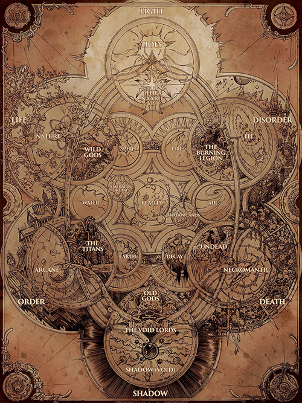

Magic System
“Magic is the art of circumventing the normal. [...] The stars march in order across the sky, the seasons fall one after the other with lockstepped regularity, and men and women live and die. If that does not happen, it's magic, the first warping of the universe, a few floorboards that are bent out of shape, waiting for industrious hands to pry them up.”- Medivh
The universe is a realm filled with potent magics (also spelled magiks and magicks, or even called wizardry and sorcery) and mighty beings. Since the dawn of time, these forces have influenced the cosmos, setting the stars in motion and the destiny of countless worlds and mortal civilizations.
Magical energies are most apparent beneath the earth as well as in special locations - centers of elemental forces, otherworldly powers, and mystical energies. The nature and uses of the forms of magic are vigorously debated on Azeroth, but the magnitude of what magic can accomplish cannot be doubted.
The Cosmic Forces
The First Ones are enigmatic godlike beings who shaped the cosmos and the fabric of all realities. They conceived and put in place the six governing cosmic forces of reality, as well as the pantheons that embody them and the realms that they inhabit. According to the broker Al'firim's interpretations of the First Ones' writings, the cosmos began with six forces (or possibly a different number) existing in opposition to each other until they came together (or were brought together) and gave form to a design. Each "architect" gave a portion of themselves, and thus "the pattern was drawn". With a framework in place, all things in the universe came to be, like a fungus growing upon the frame. The six forces were now in balance, and others arose from their intersections—a simple structure growing infinitely more complex. The brokers believe that the First Ones made the endless cycle of Life and Death the central part of their creation.
| Name | Magic | Pantheon | Plane | Zereth | Lesser Powers |
|---|---|---|---|---|---|
| Light | Holy | Unknown | Unnamed plane | Unnamed | Naaru |
| Void | Shadow | Unknown | Unnamed plane | Unnamed | Old Gods |
| Life | Nature | Pantheon of Life | "Realms of Life" | Unnamed | Wild Gods |
| Death | Necromantic | Pantheon of Death | Shadowlands | Zereth Mortis | Undead |
| Order | Arcane | Pantheon of Order | Unnamed plane | Zereth Ordus | Keepers |
| Disorder | Fel | Unknown | Twisting Nether | Unnamed | Burning Legion |
Light and Shadow
Light and Shadow are the most fundamental forces in existence. Although contradictory by their very nature, they are bound together on a cosmic scale. One cannot exist without the other. Pure Light and Shadow dwell in a realm outside the borders of reality, but shades of their presence are found in the physical universe. Light manifests as holy magic, while Shadow (also called the Void) appears as shadow magic.
Life and Death
The forces of Life and Death hold sway over every living thing in the physical universe. The energies of Life, known commonly as nature magic, promote growth and renewal in all things. Death, in the form of necromantic magic, acts as a counterbalance to Life. It is an unavoidable force that breeds despair in mortal hearts and pushes everything toward a state of entropic decay and eventual oblivion.
Order and Disorder
The forces of Order and Disorder (also called Chaos[21]) govern the cosmic systems of the physical universe. Order is most commonly perceived in reality as arcane magic. This type of energy is innately volatile, and wielding it requires intense precision and concentration. Conversely, Disorder is manifested as highly destructive fel magic. This brutal and extremely addictive energy is fueled by drawing life from living beings. It has been hinted that when titans die, their souls would return to their own Order plane.
The Elements
The elements of fire, air, earth, and water serve as the basic building blocks of all matter in the physical universe. Shamanic cultures have long sought to live in harmony with, or assert dominion over, the elements. To do so, they called upon the primordial forces of Spirit and Decay. Those who seek to bring balance to the elements rely on Spirit (sometimes referred to as the fifth element by shaman, or chi by pandaren). This life-giving force interconnects and binds all things in existence as one. Decay is the tool of shaman seeking to subjugate and weaponize the elements themselves.